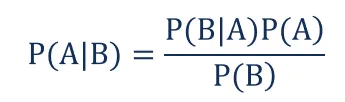
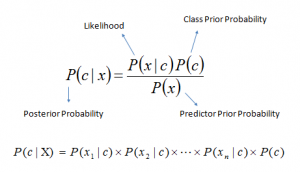
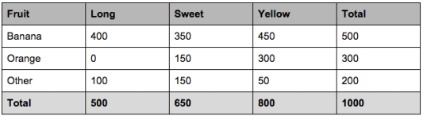

Naive Bayes Algorithm¶
Introduction¶
It is a classification technique based on Bayes’ Theorem with an assumption of independence among predictors. In simple terms, a Naive Bayes classifier assumes that the presence of a particular feature in a class is unrelated to the presence of any other feature.
For example, a fruit may be considered to be an apple if it is red, round, and about 3 inches in diameter. Even if these features depend on each other or upon the existence of the other features, all of these properties independently contribute to the probability that this fruit is an apple and that is why it is known as ‘Naive’.
Naive Bayes model is easy to build and particularly useful for very large data sets. Along with simplicity, Naive Bayes is known to outperform even highly sophisticated classification methods.
Bayes’ Theorem¶
Naive Bayes Algorithm uses bayes’ theorem so let us understand this theorem first.
In statistics and probability theory, the Bayes’ theorem (also known as the Bayes’ rule) is a mathematical formula used to determine the conditional probability of events. Essentially, the Bayes’ theorem describes the probability of an event based on prior knowledge of the conditions that might be relevant to the event.

Where:
P(A|B) – the probability of event A occurring, given event B has occurred
P(B|A) – the probability of event B occurring, given event A has occurred
P(A) – the probability of event A
P(B) – the probability of event B
Working¶
We use Bayes’s theorem to calculate the probability of given set of input to belong to a given class we have also done similar things earlier.let us now write the bayes theorem in term of class and input which will help us to understand things in a better way,also let us see some technical names given to these probabilities.

Above,
P(c|x) is the posterior probability of class (c, target) given predictor (x, attributes).
P(c) is the prior probability of class.
P(x|c) is the likelihood which is the probability of predictor given class.
P(x) is the prior probability of predictor.
Now one of the basic assumptions of Naive bayes’s algorithm is Independence of features (No value of attribute is dependent on other) we can use to write the term \(P(X|c)\) as the product of Indivisual features i.e.
\(X=(X_1,X_2,X_3....X_n)\)
\(P(X|c)=P(X_1|c)\times P(X_2|c)\times ......P(X_n|c)\)
Therfore
\(P(c|X)=\frac{\large{P(X_1|c)\times P(X_2|c)\times......P(X_n|c)\times p(c)}}{\large{P(X)}}\)
Example¶
Let us take an example with dummy dataset to understand the algorithm in a better way below mentioned data is just for understanding the concept.
let’s say we have data on 1000 pieces of fruit. The fruit being a Banana, Orange or some other fruit and imagine we know 3 features of each fruit, whether it’s long or not, sweet or not and yellow or not, as displayed in the table below.

So from the table we can find out that-
50% of the fruits are bananas
30% are oranges
20% are other fruits
Based on our training set we can also say the following:
From 500 bananas 400 (0.8) are Long,
350 (0.7) are Sweet and 450 (0.9) are Yellow
Out of 300 oranges, 0 are Long, 150 (0.5) are Sweet and 300 (1) are Yellow
From the remaining 200 fruits, 100 (0.5) are Long, 150 (0.75) are Sweet and 50 (0.25) are Yellow
Appyling Naive Bayes¶
Which should provide enough evidence to predict the class of another fruit as it’s introduced.
So let’s say we’re given the features of a piece of fruit and we need to predict the class. If we’re told that the additional fruit is Long, Sweet and Yellow, we can classify it using the following formula and subbing in the values for each outcome, whether it’s a Banana, an Orange or Other Fruit. The one with the highest probability (score) being the winner.
Now let us calculate the probabilities for every class and see the results for \(X=(Long, Sweet, Yellow)\)
For Banana
\(P(\dfrac{Banana}{Long,Sweet,Yellow})=\dfrac{p(\dfrac{Long}{Banana})\times P(\dfrac{Sweet}{Banana})\times P(\dfrac{Yellow}{Banana})\times P(Banana)}{P(Long)P(Sweet)P(Banana)}\)
\(P(\dfrac{Banana}{Long,Sweet,Yellow})=\dfrac{(0.8)\times (0.7)\times (0.9)\times (0.5)}{0.25\times0.33\times0.41}\)
\(P(\dfrac{Banana}{Long,Sweet,Yellow})=0.252\)
For Orange
\(P(\dfrac{Orange}{Long,Sweet,Yellow})=0\)
For Other
\(P(\dfrac{Banana}{Long,Sweet,Yellow})=0.01875\)
In this case, based on the higher score ( 0.252 for banana ) we can assume this Long, Sweet and Yellow fruit is in fact, a Banana.
Implementation¶
Naive bayes is generally used for classification task and goes very well with categorical data as value of the feature does not hold any importance in this but the probability of it does. Here we will see the python implementation of the Naive bayes we will use a data set which will have categorical features.
# importing libraries
import pandas as pd
import numpy as np
# Dataset
data = pd.read_csv("./Data/Naivebayes/mushrooms.csv")
# Visualize the dataset
data.head()
| class | cap-shape | cap-surface | cap-color | bruises | odor | gill-attachment | gill-spacing | gill-size | gill-color | ... | stalk-surface-below-ring | stalk-color-above-ring | stalk-color-below-ring | veil-type | veil-color | ring-number | ring-type | spore-print-color | population | habitat | |
|---|---|---|---|---|---|---|---|---|---|---|---|---|---|---|---|---|---|---|---|---|---|
| 0 | p | x | s | n | t | p | f | c | n | k | ... | s | w | w | p | w | o | p | k | s | u |
| 1 | e | x | s | y | t | a | f | c | b | k | ... | s | w | w | p | w | o | p | n | n | g |
| 2 | e | b | s | w | t | l | f | c | b | n | ... | s | w | w | p | w | o | p | n | n | m |
| 3 | p | x | y | w | t | p | f | c | n | n | ... | s | w | w | p | w | o | p | k | s | u |
| 4 | e | x | s | g | f | n | f | w | b | k | ... | s | w | w | p | w | o | e | n | a | g |
5 rows × 23 columns
# Seprating features(X) and label(y)
X, y = data.drop(["class"], axis=1).values, data["class"].values
X.shape, y.shape
((8124, 22), (8124,))
Now let’s implement our Naive Bayes class
class NaiveBayes:
def __init__(self):
pass
def fit(self, X, y):
self.X = X
self.y = y
self.classes, counts = np.unique(y, return_counts=True)
self.priors = counts/sum(counts)
def prob_x_feature_given_y(self, x_feature_val, x_feature_ix, y_class):
X = self.X[self.y == y_class]
feature_vals, counts = np.unique(X[:, x_feature_ix], return_counts=True)
prob = ((counts[feature_vals == x_feature_val]
if
len(counts[feature_vals == x_feature_val])
else
np.array([0]) + 1)/(np.sum(counts)+len(feature_vals)))
return prob[0]
def prob_x_given_y(self, x, y_class):
prob = 1
for i in range(x.shape[1]):
prob *= self.prob_x_feature_given_y(x[:, i], i, y_class) #P(X=x|y=y_class)
return prob
def predict_instance(self, x_test):
classes_prob = []
for i in range(len(self.classes)):
classes_prob.append(self.prob_x_given_y(x_test, self.classes[i]) * self.priors[i]) #P(X=x|y=self.class[i])
ix = np.argmax(classes_prob)
return self.classes[ix], (classes_prob[ix]/np.sum(classes_prob))
def predict(self, X_test):
y_pred = []
for i in range(len(X_test)):
y_pred.append(self.predict_instance(X_test[i].reshape(1,-1)))
return np.array(y_pred)
When called the fit function using a object of class NaiveBayes it calulates the number of classes that data has as well as calculates their probability which will be required later when predicting.
For predicting the classes for a dataset, predict method is called which for every instance in the given data calls predict_instance method and stores the output in a list and then returns the numpy array of it.predict_instance method basically caluclates probabilities of the instance belonging to each class.As we have seen above, for the given data we calculte the probability of it to belong to every class, and class with highest probability is said to be the output.
prob_x_feature_given_y methods return the probabilty of the feature value given the class which is then used to calculate the probabilty of the class.Now let’s use the datset to train and then predict with help of our trained model.
# Training the model
nb= NaiveBayes()
nb.fit(X, y)
Let us the prediction of first hundred data points of our dataset
y_pred = nb.predict(X[:100])
# Accuracy
np.mean(y_pred[:, 0] == y[:100])
0.88
We can also Use Scikit learn’s Naive Bayes class which comes with more specifications which can be altered to increase the accuracy also a provides class to perform the regression task and much more. you can refer to the link given below-
Advantages And Disadvantages¶
Advantages¶
It is easy and fast to predict the class of the test data set. It also performs well in multi-class prediction.
When assumption of independence holds, a Naive Bayes classifier performs better compare to other models like logistic regression and you need less training data.
It perform well in case of categorical input variables compared to numerical variable(s). For numerical variable, normal distribution is assumed (bell curve, which is a strong assumption).
Disadvantages¶
If categorical variable has a category (in test data set), which was not observed in training data set, then model will assign a 0 (zero) probability and will be unable to make a prediction. This is often known as Zero Frequency. To solve this, we can use the smoothing technique. One of the simplest smoothing techniques is called Laplace estimation.
On the other side naive Bayes is also known as a bad estimator, so the probability outputs are not to be taken too seriously.
Another limitation of Naive Bayes is the assumption of independent predictors. In real life, it is almost impossible that we get a set of predictors which are completely independent.